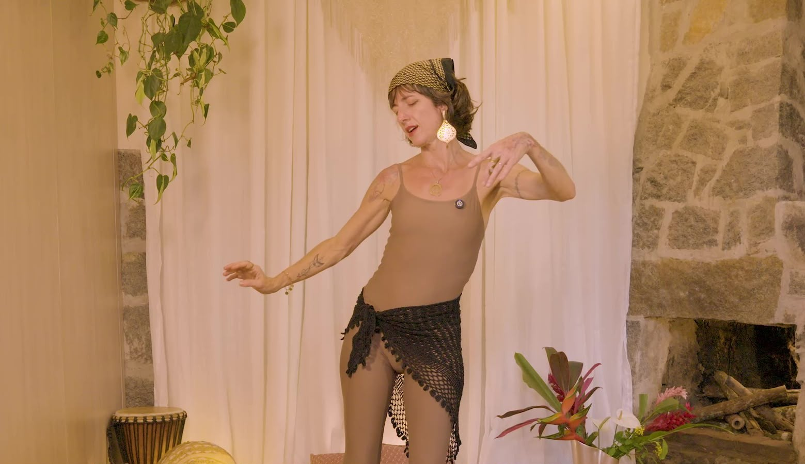
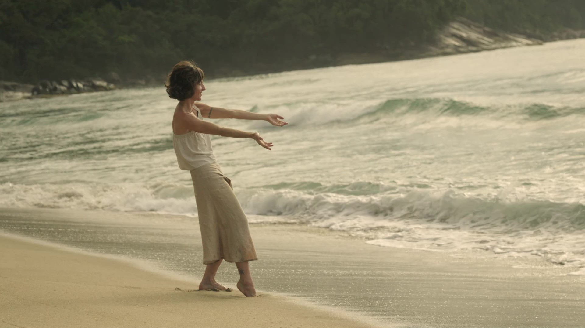
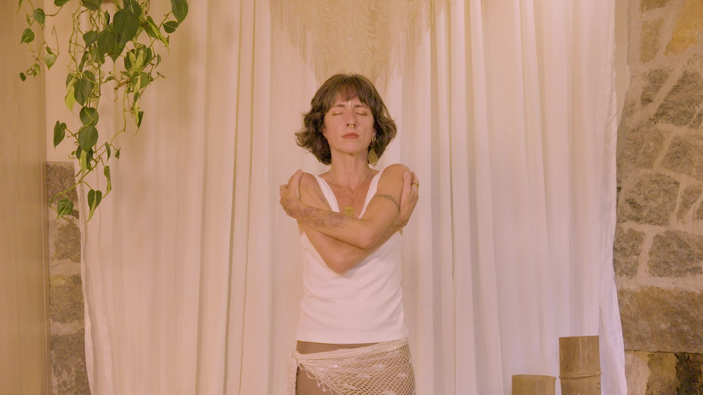
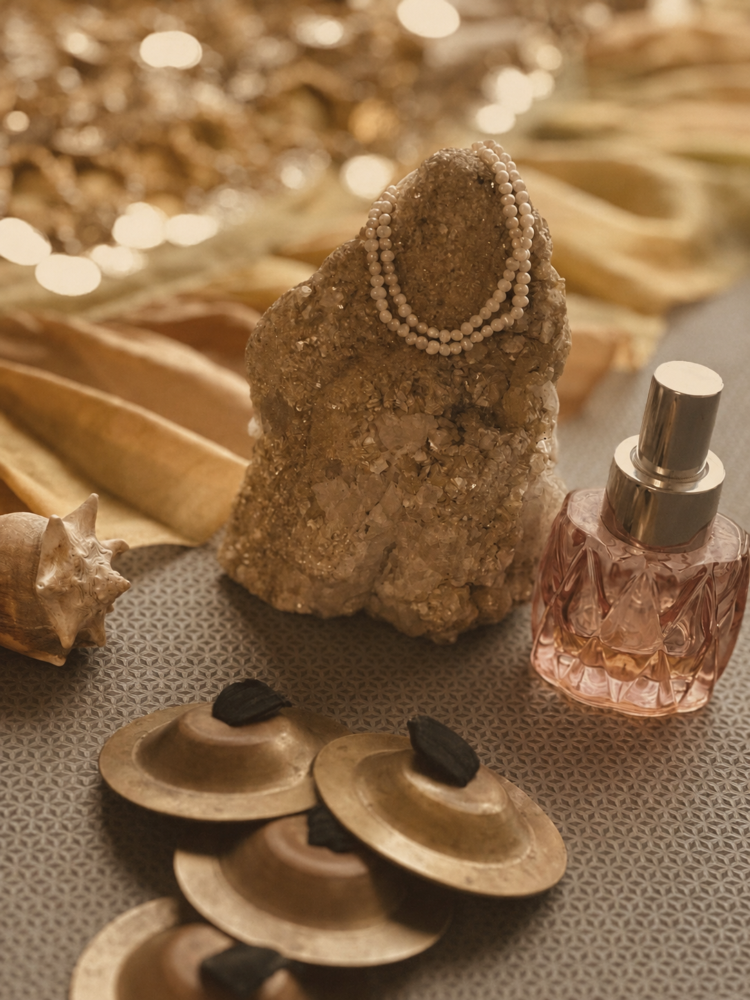
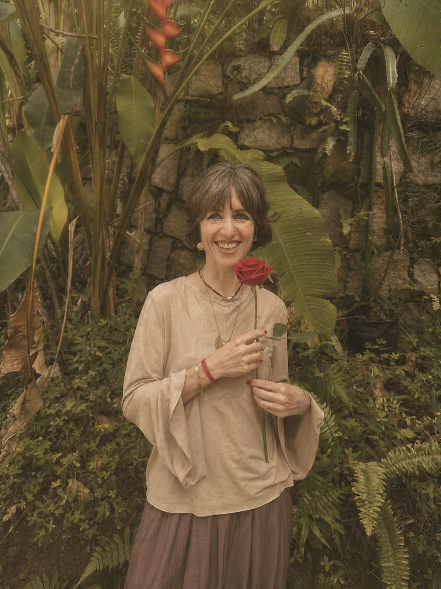
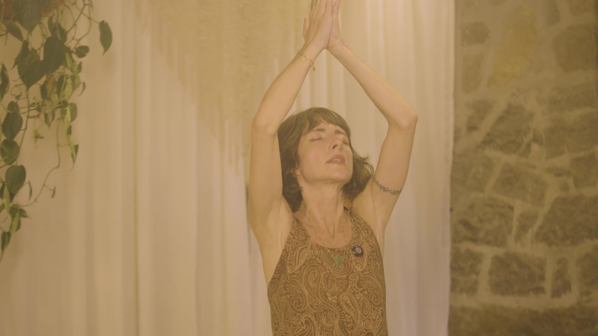
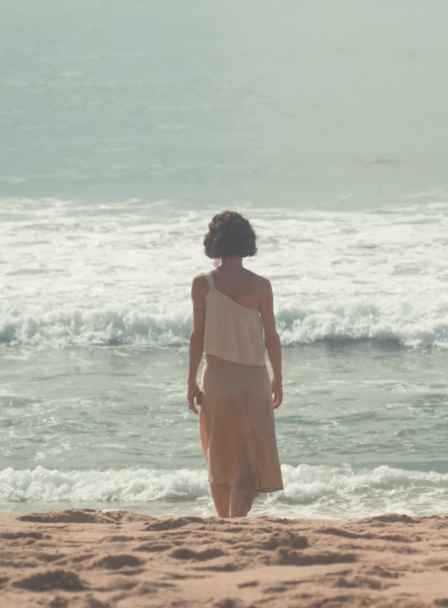
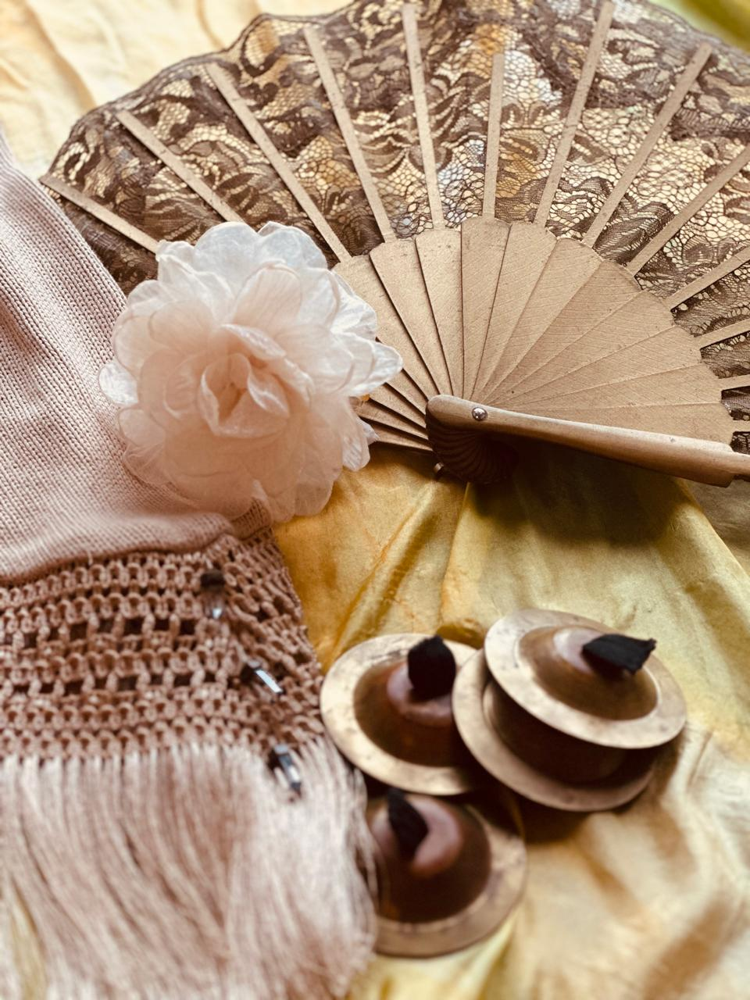
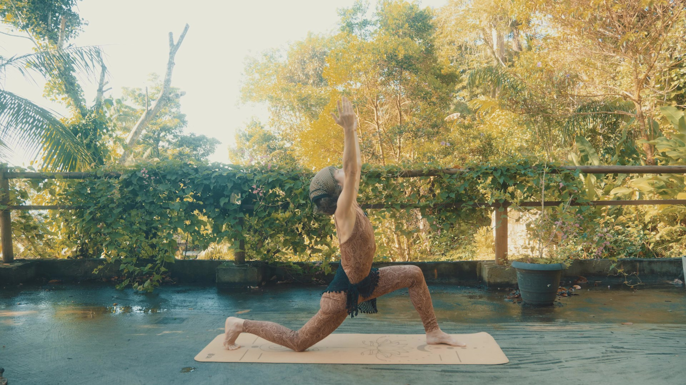
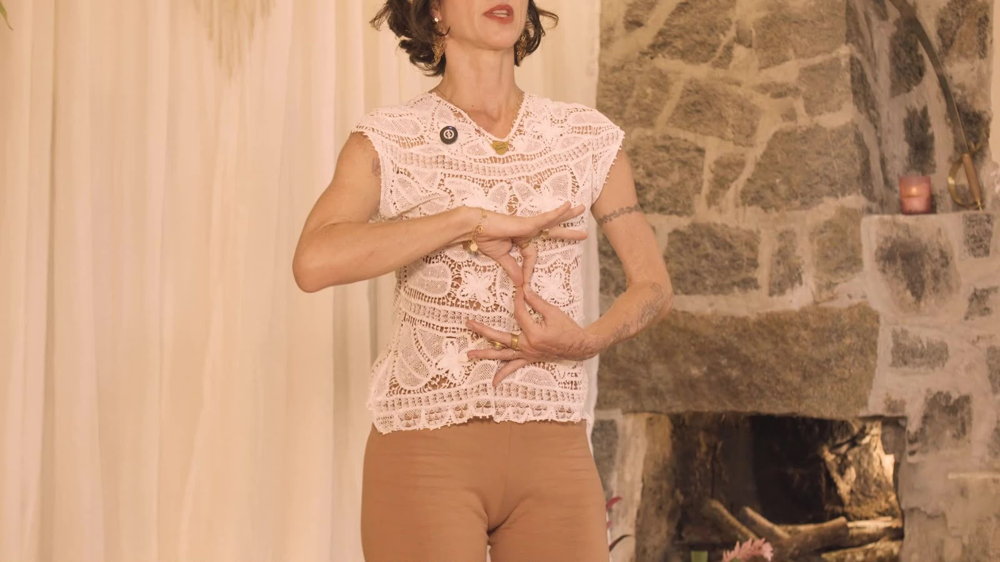

Bárbara Nunes
O corpo guarda toda a história de uma mulher.
E cada história merece ser dançada.
Dança Divina Integrativa — um caminho para habitar o próprio corpo com presença, respiração e verdade.
30 anos de estudos do corpo, do movimento e da consciência feminina.

Bárbara Nunes — criadora da Dança Divina Integrativa

Quem é Bárbara
Uma vida inteira dedicada
ao corpo que dança.
A dança chegou aos sete anos, pela expressão corporal. Depois vieram o balé clássico, a dança moderna e contemporânea, as danças brasileiras e africanas — passos que, sem que eu soubesse, já gestavam silenciosamente o caminho que floresceria décadas mais tarde.
Nem tudo foi leveza. Ao lado da beleza da dança vieram também os julgamentos — primeiro de professores, depois de mim mesma — que por um tempo me afastaram da liberdade que um dia senti ao dançar. Ainda assim, segui buscando.
Formei-me em Dança pela Universidade Federal da Bahia e estudei balé e dança moderna em Nova York. Mas foi fora da universidade que minha pesquisa mais profunda começou: na meditação, na Sagrada Medicina Ayahuasca, no Contato Improvisação e, mais tarde, na Índia, onde conheci o Ayurveda e a Dança Oriental.
Hoje acredito que o corpo guarda toda a história de uma mulher, e que cada fase da vida deixa marcas que não precisam ser apagadas — apenas acolhidas como parte da própria beleza.
-
01
Um canal, não uma fórmula
Me reconheço, acima de tudo, como um canal de transmissão da sabedoria feminina ancestral.
-
02
Uma missão
Oferecer caminhos para que as mulheres amadureçam com saúde, leveza e conexão consigo mesmas.
-
03
Trinta anos de estudo
Décadas dedicadas ao corpo feminino deram forma à Dança Divina Integrativa.
A caminhada
Uma trajetória contada
pelo próprio corpo.
Cada etapa foi vivida antes de ser compreendida.
-
Aos sete anos
Os primeiros passos
A expressão corporal me apresenta à dança. Vieram o balé clássico, a dança moderna e contemporânea, as danças brasileiras e africanas.
-
Nova York e Salvador
Os primeiros estudos
Balé clássico e dança moderna em Nova York. Formação em Dança pela Universidade Federal da Bahia.
-
Um encontro
Um novo caminho
A meditação, a Sagrada Medicina Ayahuasca e o Contato Improvisação revelam que dançar podia ser um caminho de autoconhecimento — não apenas de expressão artística.
-
Índia
Ayurveda e Dança Oriental
Estudos aprofundados em meditação, massagem e Ayurveda. Posteriormente vem o encontro com a Dança do Ventre, o Tribal Fusion e o ATS revela uma sabedoria: o movimento nasce do ventre, origem da vida.
-
Maternidade
O nascimento dos filhos
Dois partos naturais, em casa, expandem minha consciência corporal e confirmam, na experiência mais íntima da vida, tudo o que vinha descobrindo através do corpo.
-
Hoje
Dança Divina Integrativa
Da compreensão de que o tempo pede um cuidado cada vez mais consciente com o corpo, nasce um caminho que une movimento, presença e sabedoria ancestral feminina.
O que essa caminhada revelou — os pilares que sustentam este trabalho
Visão de mundo
Os pilares que sustentam
cada movimento.
Corpo como templo
O espaço através do qual a vida se manifesta e se expande.
Presença
Estar inteira no momento presente, sem viver no automático.
Movimento
A linguagem através da qual o corpo se organiza e se expressa.
Natureza
A fluidez da água e o ritmo dos ciclos naturais como inspiração.
Consciência
Habitar o corpo com mais consciência, um dia após o outro.
Vitalidade
Uma energia que nasce do ventre — origem da vida e da própria dança.
Feminino
Reconhecer a sabedoria que já existe dentro de cada mulher.
Sabedoria ancestral
Uma linhagem de consciência que atravessa gerações de mulheres.
O caminho
Dança Divina
Integrativa.
Mais do que uma forma de dançar — um caminho de reconexão com o corpo através do movimento, da respiração e da sabedoria ancestral feminina.
-
I
Movimento
Movimentos ondulatórios, circulares e espiralados dissolvem a rigidez, devolvem mobilidade à coluna e às articulações e ativam a energia vital.
-
II
Respiração
A respiração se amplia e o corpo volta a sentir espaço para existir.
-
III
Emoção
Dançamos as emoções, permitindo que encontrem movimento, expressão e transformação.
-
IV
Integração
A dança deixa de se limitar à prática e passa a habitar a forma como respiramos, caminhamos e atravessamos a vida.
"O corpo guarda toda a história de uma mulher —
e cada fase merece ser acolhida."
A formação
Um caminho para
habitar o corpo.
Uma jornada para despertar a energia vital, ampliar a liberdade de movimento e recordar a sabedoria do corpo feminino.
Para quem é
- Para mulheres que percebem que o corpo pede um cuidado mais consciente a cada nova etapa da vida.
- Para quem deseja ampliar a liberdade de movimento, cultivar vitalidade e viver o dia a dia com mais leveza.
- Para quem convive com dores, tensões ou rigidez e busca uma forma mais consciente e integrada de cuidar do corpo.
- Para quem acredita que cuidar de si vai muito além da aparência ou da prática de exercícios.
- Para quem deseja fazer do movimento um caminho de autocuidado para toda a vida.
Para quem não é
- Para quem procura apenas aprender coreografias.
- Para quem busca uma solução imediata, sem disposição para cultivar uma prática contínua.
- Para quem não deseja desenvolver uma relação mais profunda com o próprio corpo.
O que você irá desenvolver
- 01Um corpo mais livre, fluido e cheio de vitalidade para viver com alegria cada etapa da vida.
- 02Mais mobilidade, leveza e consciência corporal para reduzir tensões e mover-se com mais conforto.
- 03Uma relação mais amorosa com seu corpo, fortalecendo autoestima, confiança e presença feminina.
- 04A capacidade de acolher emoções e transformar o movimento em um caminho de equilíbrio e autorregulação.
- 05Um novo olhar sobre o autocuidado, fazendo do movimento uma prática para toda a vida.
Como se vive a formação
O que você encontrará
Uma jornada para reencontrar o corpo como ele sempre foi: vivo, sensível e sábio.
Quero viver essa experiênciaHistórias reais
Mulheres que já
dançaram esse caminho.
A Dança Divina me ajudou a me reconectar com meu corpo e meu feminino. Em poucos encontros, comecei a me sentir uma nova mulher.
A Dança Divina me ensinou que posso dançar do jeito que sou hoje. Descobrir isso foi libertador.
Há muitos anos fui aluna da Bárbara. Até hoje carrego comigo essa experiência e a tenho como uma das minhas mestras.
Bárbara dança e ensina com uma leveza única e autêntica. É lindo testemunhar sua forma de servir.
Descobri que nunca havia dançado para mim. Dançar com presença foi uma experiência profundamente transformadora.
Atmosfera
Fragmentos de uma
jornada contemplativa.








Assim como uma rosa leva tempo para florescer,
o corpo também pede o seu próprio tempo.
Perguntas frequentes
Ainda com
alguma dúvida?
Se a sua pergunta não estiver aqui, é só chamar antes de decidir.
Você percorre módulos guiados de movimento, respiração e prática, com acompanhamento e um espaço de comunidade para caminhar junto com outras mulheres.
Não. A Dança Divina Integrativa não exige técnica prévia — o caminho começa exatamente de onde o seu corpo está hoje.
A jornada acontece em módulos progressivos, no seu ritmo, com acesso estendido para revisitar as práticas sempre que precisar.
Há acompanhamento próximo em cada módulo, além de um espaço de comunidade ativo com outras mulheres no mesmo caminho.
Não. É um caminho espiritual não dogmático, aberto a qualquer crença ou ausência dela.
A formação foi desenhada pensando em mulheres 40+, mas qualquer mulher em busca de presença e movimento é bem-vinda.
Basta clicar em qualquer botão "Conheça a formação" desta página. Você chegará até um espaço de contato, onde poderá me contar um pouco da sua história e seguirmos a conversa pelo WhatsApp.
Dança Divina Integrativa
O corpo já sabe o caminho.
Falta apenas dançar.
Quero viver essa experiência
Um convite
Talvez seja hora de escutar
o que o seu corpo já sabe.
Se algo nessa experiência tocou você, quero te ouvir. Conte um pouco sobre o que você está vivendo e o que despertou seu interesse pela Dança Divina Integrativa.